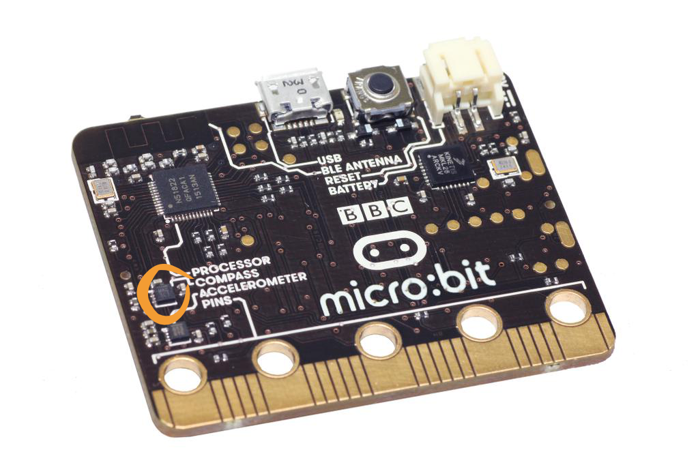

Compass¶
A magnetometer measures magnetic field strength in each of three axes. It can be used to create a digital compass or to explore magnetic fields, such as those generated by a permanent magnet or those around a coil through which a current is running.
{kind=link}
The interpretation of magnetic field strength is not easy. The driver for the magnetometer returns raw values. Each magnetometer is different and will require calibration to account for offsets in the raw numbers and distortions due to the magnetic field introduced by what is known as hard and soft iron interference.
Before doing anything else, you should calibrate your BBC micro:bit but beware:
Warning
Calibrating the compass will cause your program to pause until calibration is complete. Calibration consists of a little game to draw a circle on the LED display by rotating the device.
Basic Functions¶
The interface to the magnetometer looks very much like the interface to the accelerometer, except that we only use the x and y values to determine direction. Remember, before using the compass you should calibrate it, otherwise the readings may be wrong:
from microbit import *
compass.calibrate()
while True:
x = compass.get_x()
y = compass.get_y()
print("x reading: ", x, ", y reading: ", y)
sleep(500)
This reads the magnetic field in two dimensions (like an actual compass) and outputs the values, which seems easy enough. The stronger the field, the bigger the number. Try it out and figure out which is the x axis for the magnetometer. If you want to know the direction you need to calculate \(tan^{-1} (y/x)\), in python this is written as:
import math
from microbit import *
compass.calibrate()
while True:
x = compass.get_x()
y = compass.get_y()
angle = math.atan2(y,x) *180/math.pi
print("x", x, " y", y)
print("Direction: ", angle)
sleep(500)
The 180/PI is because the angle returned is in radians rather than degrees. Fortunately, the BBC micro:bit has a function to calculate the heading automatically:
compass.heading()
This gives the compass heading, as an integer in the range from 0 to 360, representing the angle in degrees, clockwise, with north as 0. You still need to calibrate the
device before you use compass.heading.
Practice questions¶
Make the micro:bit into a compass that illuminates the LED closest to where north lies.
Calibrate your magnetometer. Find out whether the calibration stays (about) the same over time and whether it is the same inside or outside a building or near something that has a lot of steel in it (e.g. a lift).